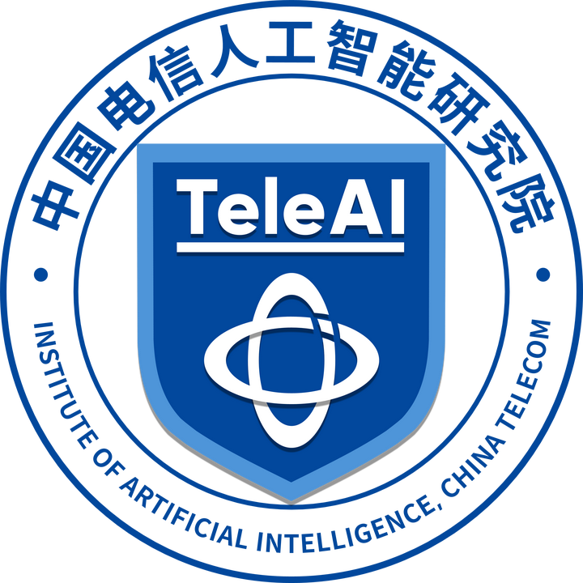

About Me
I am a Ph.D. student at the University of Science and Technology of China (USTC), supervised by Prof. Xuelong Li. My research focuses on open semantic scene perception and exploration, spanning visual perception and embodied action in open and dynamic environments.
I am broadly interested in visual perception algorithms, including object detection, semantic segmentation, and related computer vision methods, as well as embodied intelligence approaches such as world action models, vision-language-action (VLA) models, and diffusion-based models. I study these problems across diverse environments, with particular interests in natural scenes, UAV platforms, and underwater scenarios.
Building intelligence for an open and dynamic world.
Education
School of Information Science and Technology
University of Science and Technology of China (USTC)
Ph.D. student.
Sep. 2024 – Present
School of Artificial Intelligence and Automation
China University of Geosciences (Wuhan)
Undergraduate study in Automation. Selected for the Li Siguang Program (李四光计划) in 2021.
2021 – Jun. 2024
School of Mechanical Engineering and Electronic Information
China University of Geosciences (Wuhan)
Freshman-year undergraduate study.
Sep. 2020 – 2021
Experience

Jan. 2024 – Present
News
- [07/2026] Our paper Reward-Aware Trajectory Shaping for Few-step Visual Generation is accepted by ACM MM 2026.
- [06/2026] Our paper An Open-Source Benchmark and Baseline for Multi-temporal Referring Segmentation is now available on arXiv.
- [04/2026] Our paper Reward-Aware Trajectory Shaping for Few-step Visual Generation is now available on arXiv.
- [04/2026] Our paper Towards Realistic Open-Vocabulary Remote Sensing Segmentation: Benchmark and Baseline is now available on arXiv.
- [03/2026] Four papers are accepted by CVPR 2026, including two first-author papers.
- [11/2025] Our paper Exploring Efficient Open-Vocabulary Segmentation in Remote Sensing is accepted by AAAI 2026 as an Oral presentation (Top ~5%).
- [10/2025] Awarded the National Scholarship for Graduate Students.
- [04/2025] StitchFusion is accepted by ACM MM 2025 as an Oral presentation.
- [09/2024] Started my Ph.D. journey at USTC.
Selected Publications [Full List] (* Equal contribution)


Exploring Efficient Open-Vocabulary Segmentation in Remote SensingAAAI 2026 Oral · Top ~5%
AAAI Conference on Artificial Intelligence (AAAI), 2026.

MARIS: Marine Open-Vocabulary Instance Segmentation
IEEE Conference on Computer Vision and Pattern Recognition (CVPR), 2026.

Exploring the Underwater World Segmentation without Extra Training
IEEE Conference on Computer Vision and Pattern Recognition (CVPR), 2026.

Boosting Quantitative and Spatial Awareness for Zero-Shot Object Counting
IEEE Conference on Computer Vision and Pattern Recognition (CVPR), 2026.

StitchFusion: Weaving Any Visual Modalities to Enhance Multimodal Semantic SegmentationOral
ACM International Conference on Multimedia (ACM MM), 2025.

U3M: Unbiased Multiscale Modal Fusion Model for Multimodal Semantic Segmentation
Pattern Recognition, 2025.


Reward-Aware Trajectory Shaping for Few-step Visual Generation
ACM International Conference on Multimedia (ACM MM), 2026.
Honors and Awards
- National Scholarship for Graduate Students, 2025.
- AAAI 2026 Oral Presentation (Top ~5%).
- ACM MM 2025 Oral Presentation.
Professional Service
Journal Reviewer: IEEE TPAMI, IEEE TNNLS, IEEE TGRS, Pattern Recognition, and related journals.
Conference Reviewer: CVPR, NeurIPS, ICLR, and other major conferences.